In the last few chapters you've written
graphical programs
using the
In the last few chapters you've written
graphical programs
using the Graphics class to draw pictures on your
applets, and the object-oriented ACM Graphics classes, like
GImage and GRect, to draw pictures
in your applications.
You haven't yet worked with graphical "interactors" or GUI components, like buttons and labels. In the final section of this chapter, you'll learn how to add buttons and labels to your programs. That way the users of your video Blackjack program will be able to tell you whether they want to hit or stand, and you'll be able to tell them when they've won or lost.
Before we do that, though, let's take a look at that intriguing term, widget.
What are Widgets?
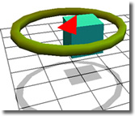
Michael Gleicher, in his 1994 Carnegie Mellon Computer Science Thesis, A Differential Approach to Graphical Interaction, discusses the use of numerical constraint solving as a basis for the creation of direct manipulation graphical interfaces. In the paper he describes, and illustrates, the rotation widget pictured to the right.  Six years later, on September 5, 2001, Lyn Rossiter McFarland,
wrote her book about Widget, a wet, stray, homeless Westie,
who masquerades as a kitten to be accepted into a family
of six well-fed cats.
Six years later, on September 5, 2001, Lyn Rossiter McFarland,
wrote her book about Widget, a wet, stray, homeless Westie,
who masquerades as a kitten to be accepted into a family
of six well-fed cats.
Our widgets, though, have nothing to do with lost dogs or mathematical constraints. For us, widget is a generic term that, in the programming world, has come to mean a control or component used to construct a Graphical User Interface (GUI). Widget refers to the graphical controls that are used to capture user input and to display your computer's output. This includes things like pushbuttons, checkboxes, radio buttons, labels, scrollbars, menus, text areas and so on.
Java Widget Toolkits
Now you've probably noticed that these widgets often look
different on different platforms. The buttons and labels on a
Mac look a lot different than those on Windows. Even on the
same platform, though, the widgets can take on a different look
and feel. In Windows XP, for instance, you can choose whether
all of the controls will use the XP look, or the Windows
Classic look
 A collection of widgets is commonly called a toolkit.
Java actually has two different toolkits that you can use.
The "original" Java widgets are called the AWT components;
AWT stands for Abstract Window Toolkit.
When Java 2 came out, a second widget toolkit was added to the
Java class libraries. This toolkit is officially named the JFC, which
stands for the Java Foundation Classes, but
it's almost universally referred to by the code name in use
when the classes were developed: Swing.
A collection of widgets is commonly called a toolkit.
Java actually has two different toolkits that you can use.
The "original" Java widgets are called the AWT components;
AWT stands for Abstract Window Toolkit.
When Java 2 came out, a second widget toolkit was added to the
Java class libraries. This toolkit is officially named the JFC, which
stands for the Java Foundation Classes, but
it's almost universally referred to by the code name in use
when the classes were developed: Swing.
While the Java Class Libraries include both the AWT and Swing toolkits, there's nothing to stop you from using an entirely different set of widgets. That's what Eclipse does; the folks at IBM who originally created Eclipse didn't especially like either Swing or the AWT and so they developed the Standard Widget Toolkit or SWT. While you can use the SWT in your programs, you'll have to distribute the SWT library along with your program classes, just like Eclipse does.
You can also
think of the graphical ACM classes we used earlier in the text
as a toolkit of sorts. The AWT Label class, for
instance, is similar (in ways) to the GLabel class you
used last week.
AWT and Swing
To get started, let's take a look at some of the main "players"
in the AWT/JFC family tree" of classes:
 The diagram shown here is an inheritance hierarchy that
shows the relationships between the different GUI classes.
In Java, the
The diagram shown here is an inheritance hierarchy that
shows the relationships between the different GUI classes.
In Java, the Object class is ultimate superclass
for all classes, not just the GUI classes. Although it's an
important class, for the AWT and Swing toolkits, the
Component class is probably more important.
Component is the direct
superclass for almost all AWT
GUI "widgets" such as Label, Button,
and TextField, as you can see from the illustration.
(These are the classes highlighted in green.)
Heavyweight and Lightweight
As you can see from the picture above, for every component in the
AWT, such as Button or Label, there is a
similar Swing component that starts with J: the JButton
and the JLabel, for instance. This continuity allows
you to build on what you already know, while adding new functionality.
In addition to these "replacement" components, there are also new
components available that are not available in the AWT. These
include the JSlider class, the JProgressBar
class, and the JToolBar class, as well as more complex
and sophisticated components such as trees, grids, and editors.
You might wonder why the JFC didn't simply improve the
existing Button class instead of adding a whole new
class. There is an important reason for this, and it underlies the
basic difference between the AWT and Swing:
- In the AWT, all components are created by the underlying operating system using a system of "parallel objects" known as peers. Because of these operating-system created peers, AWT widgets are called heavyweight components.
- In the JFC, all components, (except for
JFrameand a few others, are lightweight components—they don't involve the operating-system created peers that underlie the AWT.
Two important consequences follow from this underlying difference:
- In the AWT, the user interface will take on the look of
the operating system that the program is running on, since the
components are actually created by the host operating system.
The same Java program will appear as a Windows program when run
on Windows, and as a Mac program when run on the Mac.
With Swing, that's not necessarily true; a Swing program can look the same on the Mac, Solaris, and Windows by using a "cross-platform look and feel". Swing programs can also emulate the host look and feel, but the components are not created using native widgets, but are "drawn" by the Java runtime.
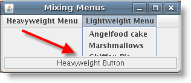
- Swing and AWT components don't "mix and match" very well.
Because of their different underlying architectures, you should
try and use only Swing components or only AWT
components; not half-and-half. That's why the
Buttonclass wasn't simply improved; it's because Swing is a fundamentally different animal than the AWT.
My previous recommendation was to use the AWT components for applets, which should be as accessible as possible, and to use Swing for Java applications, where you can ship a Java runtime with your program if necessary. Today, in 2011, though, there's really no reason to use the older AWT components, even for general-distribution applets. For your ACM graphics programs, we'll use the Swing components.
This doesn't mean, however, that the AWT has gone away. In fact,
as you can see from the picture above, all of the new Swing
components are derived from java.awt.Container, (which is,
itself, derived from java.awt.Component, so all of
the time you spent learning how to use Java's Component
class is time well spent. In addition, all of the Graphics
methods in the AWT have been retained, and many of them have been
enhanced in the Java 2D packages.
Changing the Look and Feel
When you write a GUI program using the Java Swing classes, you can
actually change the "look and feel" when the program runs. If you
want the program to look as natural as possible, just add this
function to your program and call it when your program starts up.
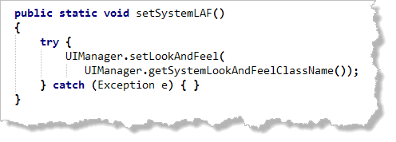
If you are only going to run your program inside DrJava, it's even easier; just add the following line at the beginning of your program:LAF.setSystemLAF();
Using Widgets
We'll start out by using the JFC (or Swing)
components inside ACM graphics programs. The JFC components
are not part of the ACM libraries though, like the
GImage and GRect classes are. The
JFC widgets are part of the standard Java class libraries.
That means that the JFC components will work exactly
the same way when you use them in a "regular" Java GUI program.
The only difference is that with the ACM programs, it's a little
easier to make the widgets look good when you add them to your
program. In a regular Java GUI program, there's quite a bit of
code required to set up the "container" part of your program,
and to place the widget where you want it to go; this is code
that the ACM GraphicsProgram class supplies for you.
You'll learn how to create "regular" Java GUI programs later
in the course.
Basic Widgets
You can really write quite a few programs by learning to use
just a few different components. At a minimum, you'll need
controls for input, processing and output: the basic
operations of every computer program. The components we'll
use for that are:

- The
JButtonwidget, which you'll use to trigger the processing step in your program. When someone clicks a button, you'll take a particular action. - The
JLabelwidget, which you'll use to display the results of your processing back to the user. - The
JTextFieldwidget, which will handle the input side of the IPO equation.
Importing the Swing Package
To use any of these widgets in your program, you need to
add a new import statement at the top of every
program that uses them. All of these widgets are in the
javax.swing package, so just add:
import javax.swing.*;
to the top of your file. The x in javax means that the classes are a standard extension to the base Java class libraries. Of course, since they're included in the Java Class libraries themselves, the word extension doesn't have much meaning. When Swing was originally released, these extension classes were included in a separate JAR file, just like the ACM classes are now.
Although all of the JFC widgets are included in the
javax.swing package, you still will usually
need to import the java.awt package as well,
so that you can use classes like Color and
Font.
A Widget Checklist
To use any kind of widget in your program, whether it's a
JButton, a JTextField or a
JLabel, you'll always follow
these three basic steps. Think of them as a checklist
or a recipe:

- First, create a widget instance variable. You don't need to initialize it.
- Next, use a widget constructor to create
a widget object. Often, however, the widget constructor
won't complete all of the required initialization. You
may want to change the size or color of the widget.
You'll normally create your object and perform this
additional initialization will go inside your
program's
init()method. (If you're writing a non-ACM program, you can put it inside your program's constructor instead.) - Finally, you need to place the widget on the surface of the program, so that the user can see and interact with it.
Here's the what each of these steps looks like in code. Go ahead
and open WidgetWorld.java which you'll find in this
chapter's code folder:
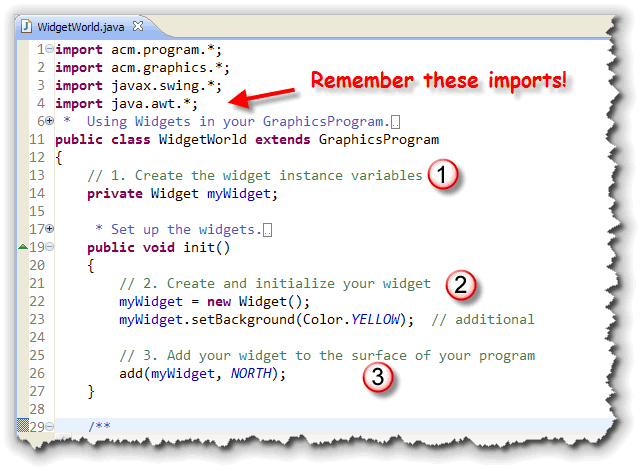
In ACM Graphics programs, you can add the component to one of the borders of the program (that is, on the north or south) or you can place it on the graphics canvas itself. In an applet or a regular non-ACM program, you'd normally create a panel and then add the widget to that. As I mentioned earlier, though, the ACM method is a little easier.If all of this sounds familiar, it should! It's almost exactly what you did when you worked with the ACM graphical shapes last week!
NOTE: There is no real Widget class.
I've placed a "dummy" class inside the code folder so that your
program will compile, but if you run it, nothing happens.
This code just shows you
the pattern you'll follow when we get to the real
specific widgets, like JLabel in the next section.
Step 1: Instance Variables
In the example shown here, the widget is created as an instance variable, or field. You should make your widgets instance variables whenever you have to use them later in other parts of your program.
In Java, variables created outside of a method are
officially called fields. However, in the real world,
you'll more often see them called instance variables,
which is a more general object-oriented term.
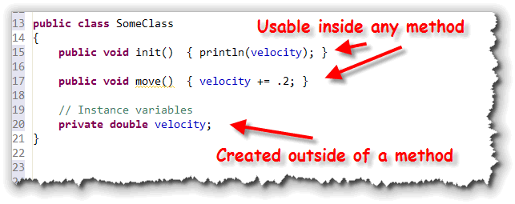
Instance variables can be used inside any method in the class. Normally, instance variables are created using the access modifierprivate, so that the variable cannot
be used outside of the class. Occasionally, fields will
use the modifier protected, so that subclasses
created from the class may directly access the fields.
It doesn't matter where inside the class the instance variable is created. Some programmers and textbooks like to put them at the bottom of the program, while others place them at the top.
In very rare instances, programmers will use the
public modifier to allow unrestricted access
to an object's instance variables. This is almost always a
poor idea, as the designers of Java's Point,
Dimension, and Rectangle classes
discovered after-the-fact.
Unlike local variables, instance variables are automatically
given a value (initialized), even when you don't provide an
initial value. Numeric variables (like int) are
initialized to the value 0, while object variables are given
the special value null. In the example here,
the field velocity starts with the value
0.0. Every time the move() method is called,
velocity increased by .2.
Step 2: Instantiation and Initialization
Inside the init() method, or your program's
constructor, you'll instantiate widgets for each of
your widget instance variables. Remember that creating an
object variable does not create the actual object.
When you create the actual object, use the name of the
instance variable, but don't precede the name
with the widget type. That would create a local
widget object and not instantiate your instance variable.
 In addition, if you need to do any additional widget
initialization, you can do it right after you've created the
widget object. Here I've set the background property for my
widget to yellow.
In addition, if you need to do any additional widget
initialization, you can do it right after you've created the
widget object. Here I've set the background property for my
widget to yellow.
If a widget is only used for display (like most
Label objects, for instance), you should make
the widget either a local variable, inside the
init() method, or simply construct and pass
the widget to the add()
method, (inside the init() method), like this:
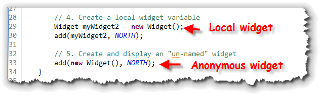
In the example shown here,myWidget2 is a local variable
that can't be accessed outside of the init() method.
Because it's a local variable, it doesn't use the
private modifier. (In fact, it can't use the
private modifier, which is legal only for instance
variables and methods.)
Line 33 creates an unnamed (or anonymous)
Widget object, rather than a local variable. You
can use an anonymous object if you aren't going to make any
changes at all to the object, once it's created. You'll often
do this for purely descriptive labels, for instance.
Step 3: Adding Your Widgets
When you create widget object using the new
operator, it's constructed and stored in memory, but it isn't
yet visible to the user of your program. To make a GUI
component visible, you need to add it to some kind of
container.
In this case, that's your ACM GraphicsProgram itself.
To add a component to a container, you use, naturally, the method
named add(). (This is true in all Java GUI programs,
not just ACM programs).
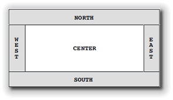
In ACM programs, though, you can tell the component which border location you want to place it into, using the constantsNORTH, SOUTH, EAST
or WEST. When using these, remember that they
are all upper-case.
In a GraphicsProgram you can also place widgets on
the canvas area as well. To do this you:
- Retrieve the
GCanvasobject that makes up the center of an ACM graphics program. - Add the widget to the canvas, supplying parameters for the x,y location of the widget.
Here's what that looks like in code:

Hands-On: The JLabel Class
Of course, as I mentioned earlier, there
is no real Widget class. Now that you've
seen the pattern, though, you can apply it to the first,
and one of the simplest, of the real JFC core components,
the JLabel.
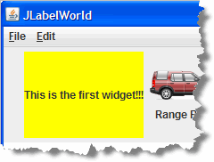
The JLabel class defines a set of objects that:
- can hold a single line of text.
- know how to display themselves
- can be positioned and moved around the screen.
- contains a surprising amount of information about their appearance, such as font size, text color, alignment, and so on.
The JLabel is very similar to the ACM GLabel
class, but with a few differences: a JLabel has a background
and can display images, for instance. Also, JLabel objects
use their upper-left corner for positioning, while GLabel
object use the text baseline, like the drawString()
method does.
Step 1: Create JLabelWorld
For our first example, we're going to modify WidgetWorld.java
to use the JLabel class. Here are the steps to follow:
- Save WidgetWorld.java as JLabelWorld.java in the same folder as WidgetWorld.java.
- Change the class name from
WidgetWorldtoJLabelWorld. - Finally, use DrJava's search and replace feature to replace each
instance of the word "Widget" with the word "JLabel". Make sure you check
"Match Case" and "Whole World" when you search and replace as shown here:

Here's what you get when you're done:
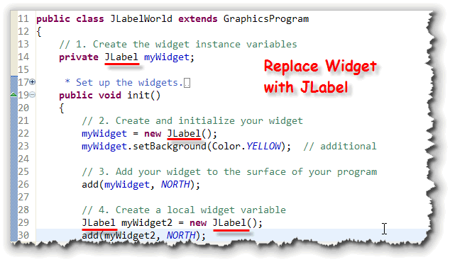
JLabel Constructors
Now, if you compile and then run the JLabelWorld program, you'll
see that it
compiles and runs just fine. The only problem is, it doesn't
look like much, since we've used the no-argument constructor
for each of the JLabel objects.
The JLabel class actually has
six different constructors that you can use.
JLabel()
JLabel(String message)
JLabel(String message, int alignment)
The first three constructors, shown here, are used for creating labels that display text values:
- Use the first constructor, the one that takes no parameters, if
you intend to modify the message displayed as your program
runs, but don't have a valid message when the program first
starts up. If your
JLabelobject is going to display the results of a calculation, for instance, you might not want to display anything until the calculation is complete. - The second constructor is the most common. Simply provide
a message when you construct your
JLabel, and the object itself will take care of the painting chores.
Using this info, change the sample code so that it
actually displays something by rewriting the label-creation
line as so:

Where's the Background?
One difference between the Swing JLabel and its AWT cousin is that
Swing labels don't automatically have an opaque background. If you want the
label's background color to show up, you need to use the setOpaque()
method, as I've done here:

Changing the Font?
You can change the font used by your JLabel by calling its
setFont() method, passing in a Font object.
Unlike the ACM GLabel class, you can't pass a
String parameter, but you can call the
Font.decode() method to get the same effect.
myWidget.setFont(Font.decode("Serif-bold-18"));
JLabel Alignment
The last of the three "text" constructors allows you to
change the alignment of the
message within the JLabel object itself. You do
that by passing a second argument, which must be one of these
class constants:
JLabel.LEFTJLabel.CENTERJLabel.RIGHT
Be careful with the spelling of these constants. Note that the
class name is proper-case, while the constant name is upper-case.
You must spell the constant correctly for this to work.
If you use either of the other two constructors, they
automatically use the JLabel.LEFT alignment.
Students are frequently frustrated when trying to
use the alignment constants because they don't do exactly what
you'd expect. Specifying JLabel.CENTER, for instance,
does not center the label on the program; instead, it
centers the text inside the label. Since the JLabel
objects normally size themselves according the text they
display, the effect is very hard to see. If you make the
label very wide, however, it becomes apparent.
JLabels with Images
In addition to the three "text-only" constructors, three
additional constructors let you create JLabels that
incorporate images, either alone or along with some text:
JLabel(Icon icon)
JLabel(Icon icon, int alignment)
JLabel(String message, Icon icon, int alignment)
Note that each of these requires you to supply an Icon
parameter, not a String like you did with
the GImage class.
So, how do you create an Icon object? It's actually
pretty easy using Java's ImageIcon class, although
it is more complicated than using GImage
which hides some of the complexity from you (just like
GLabel hides the complexity of changing fonts).
ImageIcon
The ImageIcon class makes creating images
easy by preloading the images automatically. There are nine
ImageIcon constructors, but the one which you'll
use most often is this one:
ImageIcon(String filename);
Using this constructor, creating an ImageIcon is as
easy as:
ImageIcon one = new ImageIcon("car1.gif");
ImageIcon two = new ImageIcon("images/car2.gif");
The first example loads the image from a file in the current directory, while the second loads the image from the images subdirectory, immediately beneath the current directory where your program is running.
Note the use of forward slashes, even on machines, such as Windows and Mac, which use different path separators.
This constructor assumes that your application's
images are stored as "standalone" files. "Real" Java applications,
though, usually "zip up" all of their files into a Java Archive, or
JAR file. When you do that, the ImageIcon constructor
shown here stops working.
In those cases, you can use this "magic incantation" which searches
through the program's class path (including inside JAR files),
and loads the image if it can be found:
new ImageIcon(getClass().getResource("Car1.GIF"));
Since this code works equally well for stand-alone images as
for those packaged inside JAR files, you should probably use
this code for all of your ImageIcon constructors.
The GImage class uses some code like this
"under the hood".
Here's a change to the JLabelWorld program so that
myWidget2 uses the three-parameter constructor
to display both an image as well as a description of the
image, while the anonymous JLabel uses the
"icon only" constructor to display an image of a playing card:
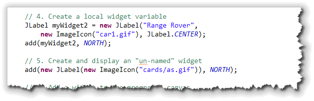
 Notice that when the program runs, the panel that contains the
Notice that when the program runs, the panel that contains the
JLabel expands to contain the largest label
(the label using the "Ace of Spades" image).
Note also that the label with the opaque background also expands so that it is the same height as the other labels.
Image and Text Alignment
The JLabel class has the ability to specify
both the horizontal and vertical alignment of the label
contents. In addition, you can specify the horizontal and
vertical position of the text (relative to the image), and the
spacing that should appear between the text and the image
(if any).
To see how this works, let's rearrange the contents of
the Range Rover JLabel:
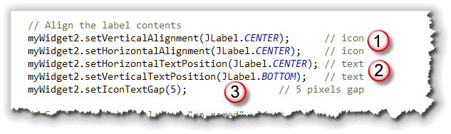
-
 We can align the
icon at the top and center of the
We can align the
icon at the top and center of the JLabel, usingsetVerticalAlignment()andsetHorizontalAlignment(). - Then, we can align the text separately by using the
setHorizontalTextPosition()andsetVerticalTextPosition()methods. - Finally, we can set the spacing between the text and the image on the
JLabelby using thesetIconTextGap()method.

Meet the Widgets Summary
- Widget is a generic term that means a control or component used to interact with the user in a GUI program. They include labels, checkboxes, pushbuttons, etc. Widgets are also sometimes called interactors.
- Different computing platforms have different widget sets. Buttons look (and act) differently on the Mac and on Windows, or even on different versions of the Mac OS and different revisions of Windows.
- The standard Java class libraries provide two built-in widget toolkits, or collections of widgets. The original AWT makes use of your operating system's native (heavyweight) components, while the more recent JFC or Swing toolkit replaces all of the native widgets with its own (lightweight) components written in Java itself.
- Other toolkits, such as the SWT used in Eclipse require you to include the GUI toolkit library when you package your program for distribution (just like distributing the ACM classes with your program).
- In Swing programs, you can change the look and feel (LAF) of the widget set when your program first starts up. The Swing classes can generally mimic or emulate the native widget set for most platforms if asked. (However, because if copyright restrictions, you can't use the Windows LAF on a non-Windows machine, or the Mac LAF on a non-Mac).
- Using a widget is similar to using the ACM graphical components.
Make sure you have imported the
javax.swingpackage. Then, you construct an object (usually as an instance variable). Next, customize it by calling any extra methods (initialization). Finally, add it to the surface of your GUI program by calling theadd()method. - In ACM graphical programs, you add your program to one of
the four borders of the program,
NORTH,SOUTH,EASTorWEST. In "regular" GUI programs, you need to use a layout manager to place your components. - The
JLabelclass is similar to the ACMGLabelclass. AJLabelcan hold a single line of text which is automatically displays. LikeGLabelyou can change the font and color; unlikeGLabelyou can also display an icon and a background along with your text. -
JLabelobjects are normally transparent. To display their background, call thesetOpaque()method. Change the color withsetForeground()andsetBackground(), and the font withsetFont(). - The alignment of a
JLabelrefers to the position of the text inside the label object itself, not the position of the label on the screen. - To create a
JLabelwith images, use one of the constructors that take anIconparameter. To create the argument when calling the method, use theImageIconclass. - When constructing an
ImageIconyour code will be more robust if you use the longergetClass().getResource()method to retrieve the image. This works even after the images for your program have been archived into a single executable. - When you have both text and images on a
JLabel, you can position each element and control the spacing between them by using the different methods, such assetVerticalTextPostion()andsetIconTextGap().